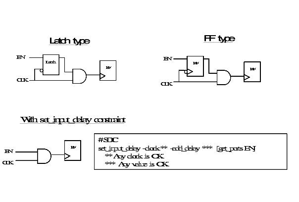
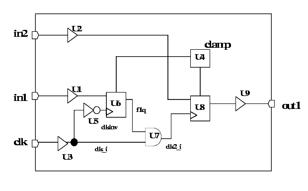
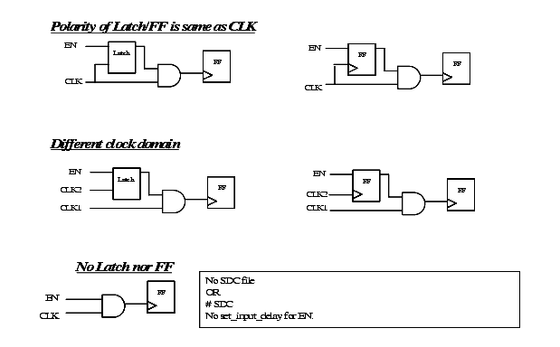
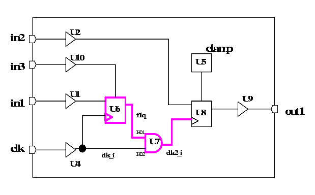

| Description | When using gated clock, the design structure needs to have an enable signal driven by latch or flip-flop to avoid any hazard or must have set_input_delay on enable signal. |
| Policy | DESIGN |
| Ruleset | CLOCKS |
| Language | VHDL/Verilog |
| Type | Hardware |
| Severity | Warning |
/* Fail: The two ffs all use posedge of CLK */
module GE_NG_1 (CLK,EN,Q,A);
input CLK,EN,A;
output Q;
reg Q,tmp_en;
wire tmp_clk;
always@(CLK) begin
if (CLK)
tmp_en <= EN;
end
assign tmp_clk = tmp_en & CLK;
always@(posedge tmp_clk) begin
Q <= A;
end
endmodule
The below schematic demonstrates the behavior of this rule:

PASS TESTCASE
FAIL TESTCASE
